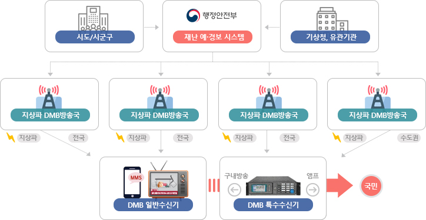

@@include('../inc/top.html')
<body>
<div class="wrap">
  @@include('../inc/header.html')
  <div class="cont">
    @@include('../inc/location.html')
    <div id="content" class="content min_width sys_intro">
      <div class="content_tit">
        <h1>DMB 소개</h1>
        <p>DMB 재난방송은 DMB(Digital Multimedia Broadcasting Emergency Alert Service)로 KBS, MBC(지역포함), SBS/YTN, 지역민영방송의 DMB 방송채널을 이용하여 DMB 수신 칩이 내장된 내비게이션에 팝업 형태의 재난문자와 마을, 재난상황실, 그리고 유관기관 및 인구 밀집지역에 설치된 특수수신기에  정보 전달
        </p>
      </div>
      <div class="content_body sys_intro02">
          <div class="article">
            <div class="article_tit">
              <h2>목적</h2>
            </div>
            <div class="article_body">
              <p>재난 발생으로 인한 인명 및 재난피해가 예상될 때, 그 피해를 예방하거나 경감</p>
            </div>
          </div>
          <!-- article__e -->
          <div class="article">
            <div class="article_tit">
              <h2>방법</h2>
            </div>
            <div class="article_body">
              <p>해당 지역의 DMB 방송국을 통해 해당 지역의 내비게이션 서비스 또는 특수수신기에  정보 전달하여 재난상황 전파</p>              
            </div>
          </div>
          <!-- article__e -->
          <div class="article">
            <div class="article_tit">
              <h2>송출체계</h2>
            </div>
            <div class="article_body">
              <div class="box_grayline">
                
              </div>
            </div>
          </div>
          <!-- article__e -->
        </div>                
      </div>
      @@include('../inc/footer.html') 
    </div>
  </div>
</div>
</body>
</html>
@@include('../inc/script.html') 
<script>
 
</script>

